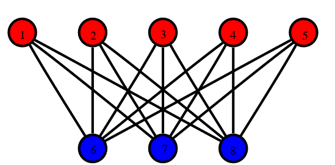
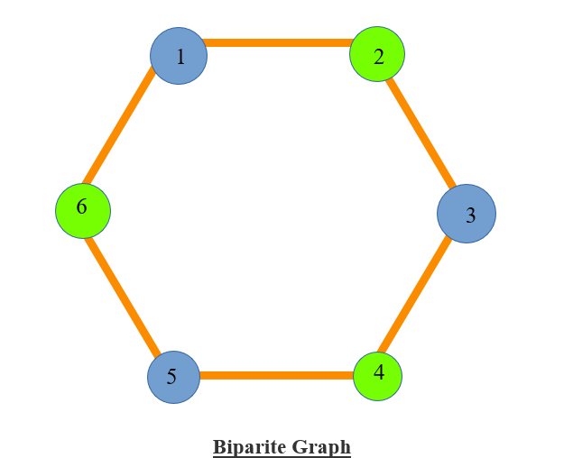
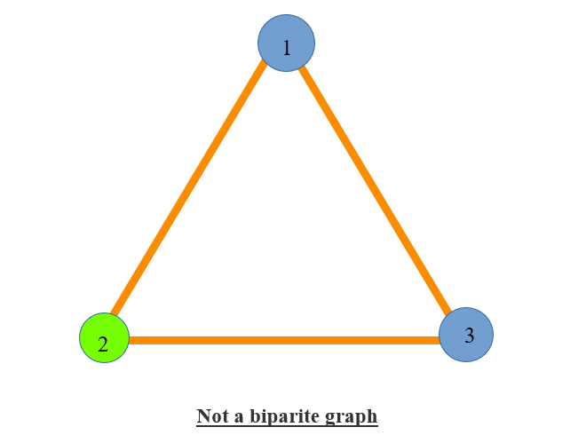
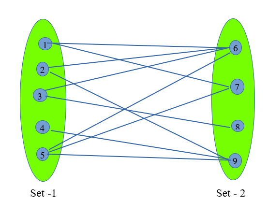

Checking whether a graph is Bipartite
Given a undirected graph. We have to check whether the graph is a Bipartite graph or not.
Bipartite Graph :-
- A Bipartite graph is a type of graph in which we can divide all the nodes in two disjoint sets so that all the edges connects nodes from different sets.
- There should not be any edge between two nodes of same sets. (i.e. for any edge (a,b) of the graph node a and node b of the graph should not belong to the same set).

- The above shown graph is a Bipartite graph.
- The nodes with red colour (1, 2, 3, 4, 5) bolongs to first set and nodes with blue colour (6, 7, 8) belongs to the second colour.
- Here we can see that all the edges of the graph is between nodes of different set.
- There are no edges between the member of same set in the above graph.
- In other words we can say that if we are able to colour the nodes of a graph with two different colours in such a way that the colour of the nodes appers to be alternet (i.e. no two nodes adjacent nodes have same colour), then the graph is Bipartite graph. In this way the nodes with one colour belongs to one set and nodes with other colour belongs to another set.
- For cyclic graph it is only possible to colour the graph in such a way if there are even number of nodes/edges in the cycle.

- Now as we can see that the above graph is a cycle with 6 edges and hense we are able to colour its node with two different colours alternately. So this is a Bipartite graph with nodes(1, 3, 5) in first set and nodes (2, 4, 6) in second set.

- It is not possible to colour the nodes of the above 3-membered cyclic graph with two colours so that no adjacent vertex have same colour beacuse this graph has an odd number of nodes/edges. (In the above graph nodes (1, 3) are of same colour and adjacent to each other).
Algorithm used:-
We can check whether a graph is Bipartite or not in two different ways :-
- Using DFS
- Using BFS
- Checking for Bipartite graph using DFS ( O(M+N) ) :-
- We will be using the same concept of colouring the graph with two different colours using DFS.
- Initially we mark all the nodes of the graph as unvisited (vis[i]=0, 1<=i<=N)
- Now we iterate over all the nodes and if the node is not visited then we run a DFS on it.
- If everytime we run a DFS we get true till the end, then the graph is a Bipartite graph.
- If any part of the graph on DFS gives false, then the graph is not a Bipartite graph.
- Concept of colouring the nodes using DFS:-
- During colouring the nodes we are considering 1 and 0 as two different colours.
- Now as we find a unvisited node we assign it with colour 1 and run DFS on it.
- After which we are marking it (let’s say node is x) as visited and iterate on it’s adjacency list. While iterating if we find an unvisited node (let’s say node is i) then assign it the colour other than the colour of node x and calls for a DFS on node i recursively.
- While iterating on adjacency list of node x if we find a node i as visited, then we check whether it’s colour is same as that of node x. If the comes out to be similar then we return false else continue.
- In this way if all the nodes are visited and checked then DFS function return true.
Implementation :-
Input :-
9 10
2 9
7 1
6 5
9 4
6 2
3 8
6 3
1 6
5 7
9 5
Output :-
Graph is Bipartite
Input :-
5 5
1 2
2 3
3 4
4 5
5 1
Output :-
Graph is not Bipartite

- Checking for Bipartite graph using BFS (O(M+N) ):-
- In this algorithm we will we using BFS to check whether the graph is Bipartite or not.
- The concept of this algorithm is adjectly same as that of the previous one.
- Just the difference is that we do not use recursion in BFS as we are doing in DFS. Here we use a queue and the rest is all same as DFS.
Implementation :-
Input :-
9 10
2 9
7 1
6 5
9 4
6 2
3 8
6 3
1 6
5 7
9 5
Output :-
Graph is Bipartite
Input :
3 3
1 2
2 3
3 1
Output :-
Graph is not Bipartite
Practice Problems :-
Happy Coding 😊
By Programmers Army